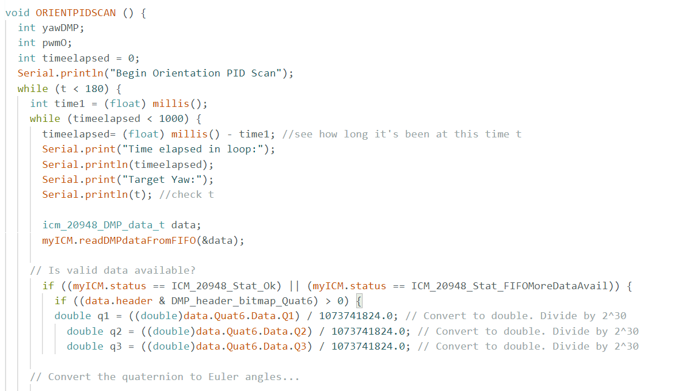
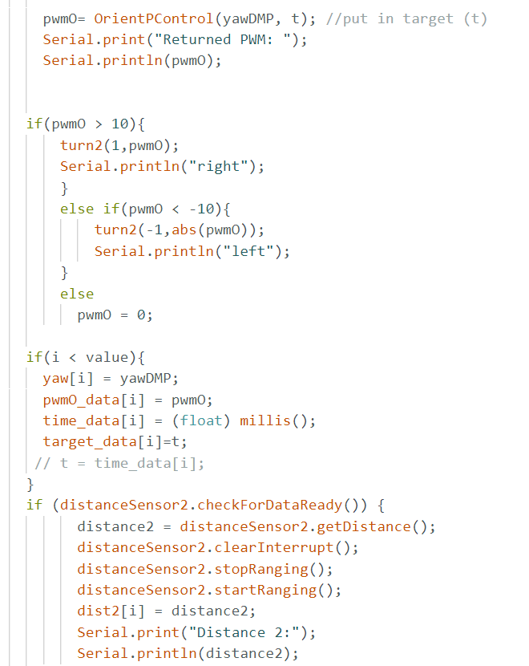
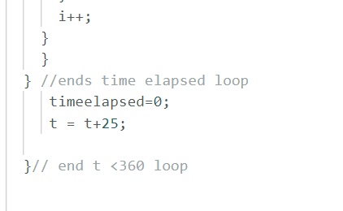
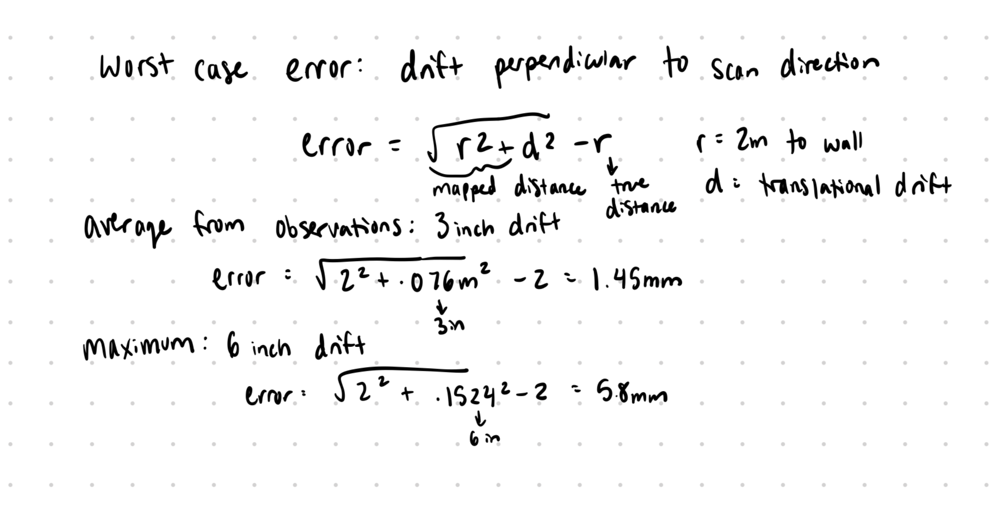
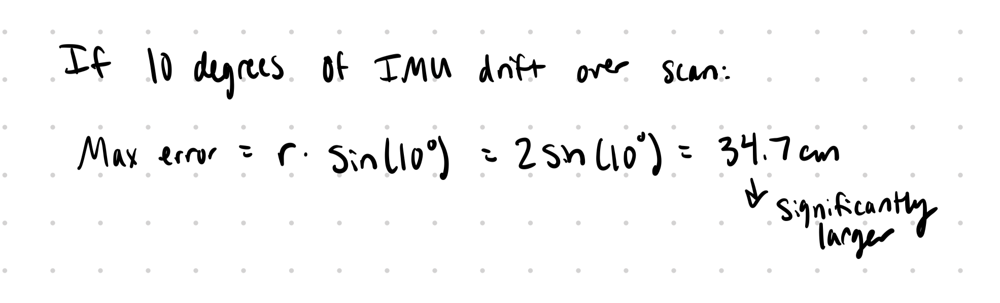
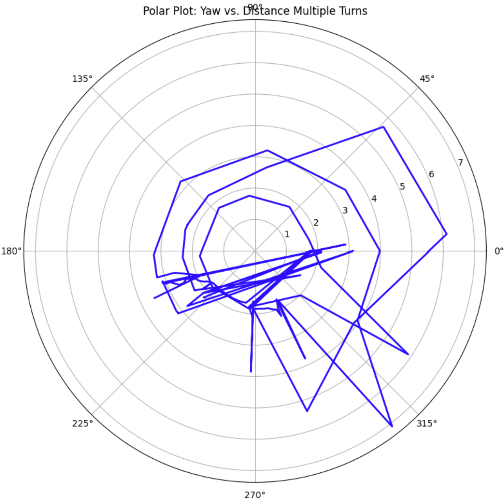
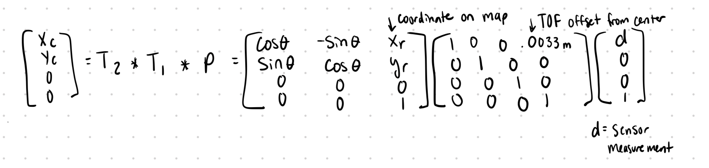

The goal of this lab was to generate a 2D map of a static environment using a mobile robot equipped with Time-of-Flight (ToF) sensors and an Inertial Measurement Unit (IMU). This map will be used in future localization and navigation labs. The robot performed controlled rotations at several marked locations to collect distance data, which was transformed and merged into a global reference frame for visualization and map building.
I used PID orientation control to collect my data. Every second, I increased my target yaw by 25 degrees so that the robot would slowly turn in a circle in 14 increments. While the robot was turning, the ToF sensor continuously collected distance data.
The main challenge was tuning the Kp value high enough to keep the robot from lagging too far behind the target, while avoiding overshoot. I found a balance where the robot would trail the target slightly, but overshoot was avoided.
Setup loop, do PID & get distance, update target and time:
  Given the reliability of my angular steps and the consistency of my PID controller, the primary error came from the robot not perfectly rotating on its center axis. I estimate the average drift to be about 3 inches (0.0762 m) and the maximum around 6 inches (0.1524 m). These are translational drifts, which result in small radial mapping errors.
The error from this drift in a 4×4 m square room is relatively small—on the order of a few millimeters of radial error (1.5–5.8 mm). However, IMU drift presents a much larger problem. Assuming a 10° heading error, the positional mapping error can reach up to 34.7 cm. The graphs at the end of the scan show distortions that suggest both drift and slight heading misalignment.
 I collected distance and yaw data at four locations: (-3, -2), (5, 3), (0, 3), and (5, -3). At each location, the robot performed a full turn and sent the distance and orientation data to Python over Bluetooth.
In some cases, the starting yaw had to be manually adjusted in the plots because the robot’s startup orientation changed slightly after re-uploading code. This required aligning scans to maintain consistency.
When performing multiple full turns, the shape of the room appeared consistent early on. However, once the PID controller lost control or the robot sped up, data quality deteriorated. Maintaining slower rotation improved consistency and reduced sensor noise.
To map ToF readings into the global frame, I applied two transformations:
The ToF sensor is mounted 1.3 inches (0.03302 m) in front of the robot's center and aligned with its axis, so T₁ is a translation in the x-direction.
T₂ includes a rotation by θ (robot's yaw) and a translation to the robot's global position (xr, yr).
(xc, yc) = T₂ × T₁ × P
This lab highlighted the importance of accurate control and sensor integration when building environmental maps. Using PID control allowed my robot to perform consistent on-axis turns. Combining individual scans into a merged map provided a good sense of spatial structure. This experience will be valuable for future labs, where localization and path planning will depend heavily on the accuracy of this baseline map.